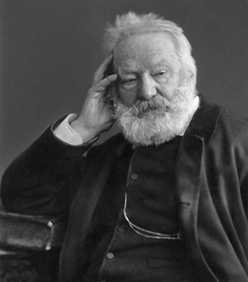

Victor Hugo (1802-1885)

Fransýzlarýn ünlü þair ve yazarlarýndandýr. Napolyon Ordusunda görevli bulunan bir subay çocuðu olarak doðmuþ, ünlü komutanýn maðlubiyetlerine paralel olarak ailece büyük sýkýntýlar yaþamýþlardýr. Küçük yaþlardan itibaren yazmaya baþlamýþ, çok genç yaþta þöhret sahibi olmuþ, yazdýðý eserlerle büyük hayranlýk uyandýrýrken, kendisinden sonra gelenleri de önemli ölçüde etkilemiþtir. Hiçbir dine mensubiyeti olmayan ailesi tarafýndan inançsýz olarak yetiþtirilmiþ ancak, ölümünden evvel Allah’a inandýðýný dile getirmiþtir. Bediüzzaman’ýn talebeleri tarafýndan Ankara Üniversitesi’nde verilen ve daha sonra Risale-i Nur’a ek yapýlarak neþredilen, Konferansta adý zikredilmiþtir.Hugo, 1802 yýlýnda Besançon’da doðdu. Anne ve babasý hiçbir dine mensup olmadýklarýndan çocuklarýný da dinsiz olarak yetiþtirdiler. Bir asker evladý olup çocukluðu babasýyla birlikte dolaþmakla geçti. Asker olan babasý, Napolyon’un Ordusu’nda önemli görevler aldý. Babasý ile birlikte Ýspanya ve Ýtalya’ya gidip geldi. Sýk sýk yurt dýþýna çýktýðý bu dönemde eðitimini de sürürdü ve Paris’te okula gitti. Napolyon’un yenilmesi, Fransa’nýn düþtüðü sýkýntýlý döneme paralel olarak Hugo’nun ailesi de bu durumdan çok büyük ölçüde etkilendi.
Ailesi ile birlikte büyük bir maddi sýkýntýnýn içine düþen Hugo, ayný zamanda aralarýnda büyük bir geçimsizliðin yaþandýðý anne-babanýn evladý olarak yaþamýný sürdürmek zorunda kaldý. Ailesi maddi sýkýntý içine düþünce daha küçük bir eve taþýndýlar. Baþladýðý hukuk eðitimini tamamlayamadan okulu býrakmak zorunda kaldý. Bu sýkýntýlar üzerine zaten edebiyata meraklý olduðu için gece gündüz çalýþarak edebi eser yazmaya baþladý ve bu yolla geçimini saðlamaya çalýþtý. Büyük bir ideal sahibi olup kendini yetiþtirmeye gayret etti. Henüz on beþ yaþýnda iken yazdýðý þiiri Fransýz Akademisi tarafýndan takdire layýk görüldü.
Hugo, edebiyat alanýnda çok genç yaþta kendini göstermeye baþladý. Roman, trajedi ve opera yazmaya baþladý. Yine on yedi yaþýnda iken yazdýðý bir þiiri Toulouse’teki Jeux Floraux Akademisi tarafýndan birinciliðe layýk görüldü. Bu sýralarda aðabeyi tarafýndan çýkarýlan gazetede yazmaya baþladý. Yirmi yaþýnda iken kaleme aldýðý ilk eseri olan Odes et Poesies Diverses (Odlar ve Çeþitli Þiirleri) kendisi için önemli bir baþarý teþkil etti ve Fransa Kralý Onsekizinci Lui kendisine bin frank maaþ baðladý.
Hugo, daha otuz yaþýný bile bitirmeden bir çok eser yazmýþ oldu. Bazý oyunlarý sahnelendi. Bazý eserleri de sansüre takýlarak yasaklandý. Eserleri, sadece þöhret kazandýrmakla kalmadý ayný zamanda önemli bir servet sahibi olmasýný da saðladý. 1931 yýlýnda büyük eserlerinden biri olarak kabul gören “Notre Dame de Paris” (Notre Dame’ýn Kamburu) adlý romanýný yazdý. Lesfeuilles d’Autonne (Sonbahar Yapraklarý), Les Chants du Crépuscule (Þafak Türküleri), Les Voix Ýntérieures (Gönülden Sesler) adýný taþýyan þiir kitaplarýyla büyük bir þair olduðunu da göstermeye çalýþtý.
Eserleri büyük bir ilgi gören, romanlarý okunan ve bazý oyunlarý sahnelenen Hugo’nun Notre Dame de Paris (Notre Dame’ýn Kamburu), Claude Gueux (Yoksul Claude) eserleri yayýnlandýktan sonra 1841 yýlýnda Akademi üyeliðine seçildi. Arka arkaya eser verip þöhret ve servet sahibi olan Hugo, daha önce burjuva düþmaný olmasýna raðmen yöneticilerle daha sýký bir irtibata girdi ve saraydan çýkmaz oldu. Bu arada büyük bir devlet adamý olma hevesine kapýldý. 1845 yýlýnda Ayan Meclisi üyeliðine seçildi. Ünlü eseri Sefiller’i kaleme almaya baþladý. Ama, bu eser kral ve çevresinin pek hoþuna gitmeyecekti. 1851 yýlýnda Bonapartçýlarýn hükümeti devirmesi üzerine, son anda tutuklanmaktan kurtularak Belçika’ya kaçtý.
Hugo, 1852 yýlýndan itibaren sürgün hayatý yaþamaya baþladý. 1870 yýlýna kadar süren sürgün dönemi ile birlikte hayatýnda önemli deðiþiklikler görüldü. Sürgünden önce ve sonrasýnda yazdýðý eserleri arasýnda önemli farklýlýklar göze çarpmaya baþladý. Daha önce yazdýðý eserleriyle ödüller kazanýp eðlence dünyasýna önemli katkýlar yaparken; bundan sonra, gündelik hayat ile daha irtibatlý ve hayatýn izlerini aksettiren eserler yazmaya baþladý. Cezalar, Gülen Adam, Deniz Ýþçileri, Dalýp Gitmeler gibi eserler yazdý. Bu arada cezasý 1859’da bitmesine raðmen, sürgün hayatýný yaþamaya devam etti. 1870 tarihinde yurda dönüþünde büyük bir coþkuyla karþýlandý. Kendisine büyük sevgi gösterisinde bulunuldu.
1878 yýlýnda bir rahatsýzlýk geçiren Hugo, önemli bir güç kaybýna uðradý. Altý yýl boyunca hiçbir þey yazamadý. Daha sonra Korkunç Yýl, Büyük Baba Olma Sanatý, Düþüncenin Dört Ana Kaynaðý adlý eserleri yayýmlandý. Ailesi tarafýndan hiçbir dine inanmayan biri olarak yetiþtirilen Hugo, ölümünden önce, hiçbir kilisenin vaazýný istemediðini, bütün insanlarýn gönülden duasýný istediðini ve Allah’a inandýðýný belirtti. Sarf etmiþ bulunduðu bu sözleriyle eski inançsýzlýðýný devam ettirmediðini göstermiþ oldu. 1885 yýlýnda öldü.
Ondokuzuncu yüzyýl Avrupa’sýnda roman sanatýnýn zirve noktasýna ulaþmasýnda katkýsý olanlardan birisi de Hugo oldu. Bu sanatýn gösterdiði baþarýda, çaðýn olaylarýnýn yansýtýlmasý ve titizlikle iþlenmesinin etkisi büyük oldu. Kapitalist yaþama getirilen eleþtiriler, halkýn büyük ekseriyetinin yaþadýðý hayatýn edebi eserlere yansýtýlmasý, baþarýnýn önemli temel taþlarýný teþkil etti. Hugo da Sefiller romanýnda, Paris’in geri kalmýþ mahallelerinde yaþayan insanlarýn ürpertici hayatýný okuyucularýn bilgisine sundu. Hugo, eserlerinde kendi yaþam öyküsünden de kesitler aktardý. Dönemin adaletsiz sistemini göz önüne sermesi, siyasi hayatýn teþhir edilmesi de Sefiller adlý eserine ayrý bir önem kazandýrdý.
Risale-i Nur’da, Hugo’nun ismi; Ankara Üniversitesinde 1947 ve 1950 yýllarýnda verilen, Sözler ve Gençlik Rehberi adlý eserlerin sonlarýna ilave edilerek neþredilen, iki konferans sunumu sýrasýnda zikredilmiþtir. Zübeyir Gündüzalp’in 1947 yýlýnda ilkini verdiði konferansta Risale-i Nur ve Bediüzzaman Hazretleri hakkýnda önemli izahlarda bulunmuþtur. Moliere, Hugo ve Goethe gibi Batýlý düþünce adamlarýnýn eserlerini okuyup içimizde hayranlýk duyduðumuzu belirten Zübeyir Gündüzalp, “Acaba Ýslâm dininin rehberi olan Kur'ân-ý Hakimi tefsir eden bir Ýslâm dâhisinin þahsýna karþý baðlýlýðýn derecesi nasýl olmalýdýr? O meþhurlardan birinin eseri kâðýda yazýlýrsa, Bediüzzaman Said Nursî'nin Kur'ân tefsiri olan Nur Risalelerini altýn sayfalara nakþetmek lâzýmdýr. Dine muarýz olmayan müstakim bir filozofun eserini tetkik için saatlerce çalýþýlýrsa, iki cihanýn saadetini ders veren Bediüzzaman'ýn eserlerini okumak için uykularýmýzý terk etmek gerektir…” demiþtir. (Risale-i Nur Külliyatý, II. C., Nesil Y., 1996, s. 2255).
1950 yýlýnda Bediüzzaman Hazretlerinin talebeleri tarafýndan yine Ankara Üniversitesi’nde verilen ikinci konferansta; Risale-i Nur ve Bediüzzaman hakkýnda geniþ açýklamalara yer verilirken, büyük þairimiz Mehmed Akif Ersoy’un bir edipler meclisinde sarf ettiði, “Victor Hugo'lar, Shakspeare'ler, Descartes'lar, edebiyatta ve felsefede, Bediüzzaman'ýn bir talebesi olabilirler” þeklindeki ifadelerine de yer verilmiþtir. (Sözler, 1999, s. 717).